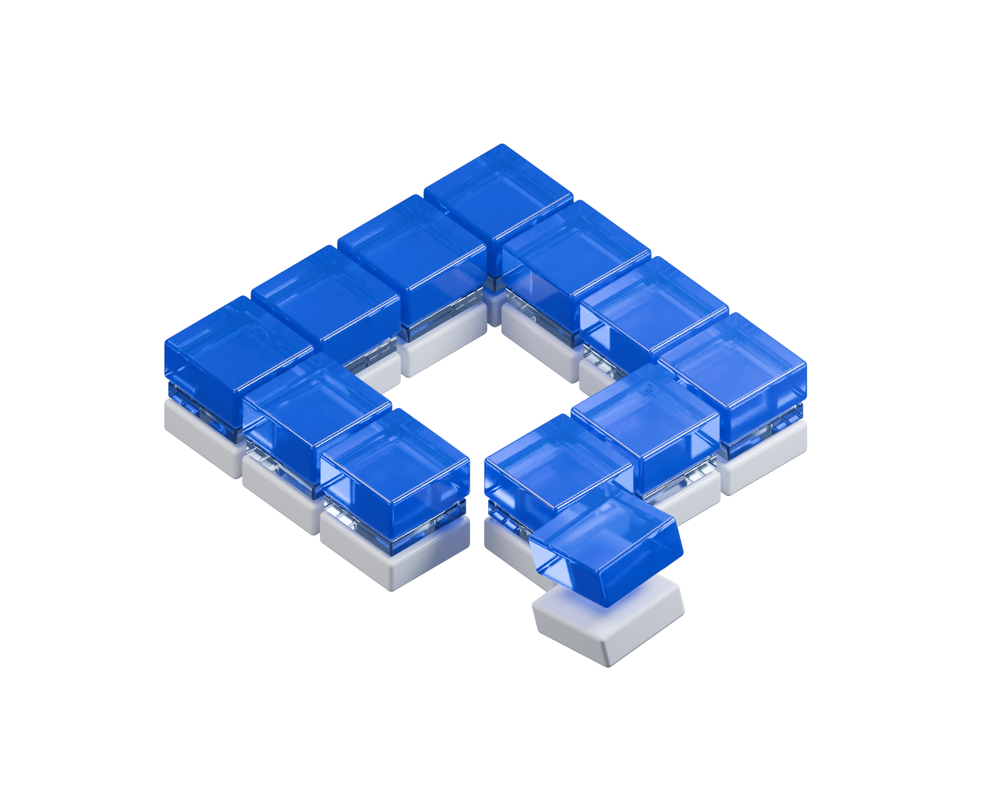

openpali.

PUBLIC EVIDENCE. SHARED UNDERSTANDING.
A clearer picture.
Piece by piece.
Public records tell part of the Palisades rebuild story. Help make that evidence easier to find, follow, and understand.
Explore on GitHub